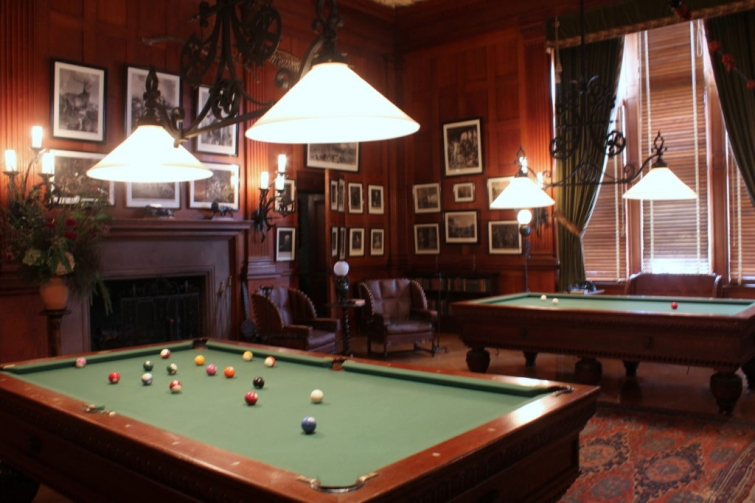

.png)
.PNG)
.PNG)
.PNG)
.PNG)
.PNG)
.JPG)
.JPG)
.PNG)
.PNG)


Hi friends! Welcome back for part 2 of our tour of the Biltmore estate near Asheville, NC . In part 1, we took a look around the rooms that the Vanderbilt family and their guests occupied. Today, we are going downstairs…waaay downstairs…to the basement where the servants lived and worked and where the recreational parts of the house are, but before we do I want to show you one more space from the main floor. Take a look again at the floor plan for that part of the house:
.jpg)
On the bottom right side of the plan, you see the Bachelor’s Wing. We saw the Billiard Room in part 1 of our tour.

Remember George Vanderbilt had this house constructed when he was 26 and while he was still single, so that Bachelor’s Wing was a must-have area. No ladies could stay in that part of the house, nor could he stay in the bedroom wing of the other part of it if single ladies were present. (Quite a change from today’s society!) The other room in the Bachelor’s Wing that I want you to see is the Gun Room. Please forgive the quality of the photo…it was dark in there! (I can’t tell you how many times I wanted to pull the drapes open as we were touring the rooms!)

This was quite the man-cave! The entire back wall of the Gun Room has cabinets that house a very extensive gun collection and prized hunting trophies.
 Alright, now that you have seen that, let’s go downstairs to the basement…
Alright, now that you have seen that, let’s go downstairs to the basement…

And through the long corridor.

You will notice from the floor plan that the entire right side of the basement is for the servants and places for them to work, while the entire left side is the recreational area for guests at the house. On the far left is a room called the Halloween Room…

It looks very different from other spaces at the Biltmore. The colorful walls feature spooky images that originally led visitors to think the room was used for a Halloween party, but recent research has led experts to determine that the walls were painted by the owners and their guests for a big New Year’s party on December 30, 1925. (You can find out more information here.) The space currently showcases photographs and displays with information about the history of the house.
Continuing on around that side of the house, we come across a real-deal bowling alley (one of the first in the nation)…

a gymnasium with what was considered at the time to be state of the art fitness equipment…

and even an indoor swimming pool with a number of dressing rooms so guests would not have to walk through the house in their wet clothing.

On the other side of the basement was space for the servants. 30 – 35 servants waited on the Vanderbilts. In the plan you can see that there are several rooms devoted to cooking and dining chores.


 The servants had their own dining room.
The servants had their own dining room.
 Because of the size of the house and the number of people who were there at any one time, there was a 4 room complex devoted to all things laundry, and all pieces of laundry dried indoors. (Good information about this area can be found here.)
Because of the size of the house and the number of people who were there at any one time, there was a 4 room complex devoted to all things laundry, and all pieces of laundry dried indoors. (Good information about this area can be found here.)

There were 26 servant bedrooms in the Biltmore house, with 40 additional ones in the stable complex. You can see in the floorplan there are a number of spaces merely called “rooms.” Those had a variety of uses including a room for preparing the many flower arrangements that decorated the spaces throughout the estate .
 And now let’s go outside the house to see the flowers that were cultivated in the amazing gardens.
And now let’s go outside the house to see the flowers that were cultivated in the amazing gardens.
 Designed by landscape architect, Frederick Law Olmsted, the grounds include a beautiful Italian garden, some terraces, a shrub garden, (with more than 500 different varieties of plants) a spring garden, a walled garden, an azalea garden, a rose garden, a bass pond, a conservatory, and America’s first managed forest. George Vanderbilt had an amazing vision for protecting the environment, and together he and Olmsted created a masterpiece.
Designed by landscape architect, Frederick Law Olmsted, the grounds include a beautiful Italian garden, some terraces, a shrub garden, (with more than 500 different varieties of plants) a spring garden, a walled garden, an azalea garden, a rose garden, a bass pond, a conservatory, and America’s first managed forest. George Vanderbilt had an amazing vision for protecting the environment, and together he and Olmsted created a masterpiece.


The conservatory was where the flowers and plants used inside the house were grown.

On the back side of the building is a terrace area.

 And on a lower level is a garden shop! 🙂
And on a lower level is a garden shop! 🙂

Today there is even an area for outdoor concerts. 🙂

The landscaped gardens cover 75 acres. George Vanderbilt’s original estate covered 125,000 acres. When he died in 1914, his wife Edith honored his wishes and sold 86,700 acres to the federal government to be the beginning of the Pisgah National Forest (rumored to have had a selling price of around $5/acre!) Today the Biltmore Estate has around 8,000 acres.
And that brings us to the end of our tour friends. Because my photographs can do very little to show you the scope of the beauty of the gardens, I want to leave you with a video that does a much better job of it. I hope you will enjoy it!
Until next time…


.PNG)
After driving past Biltmore annually for more than 20 years on our trip from Chicago to Kiawah Island, SC, we finally stopped to visit last year. What an amazing home and how sad that he really did not get to live there that long. I was blown away by the forested drive up to the house right thru the kitchen, laundry and swimming pool. What attention to detail in every space. Thanks for taking me back!
Kelly,
Wow, this is like Downton. It’s so amazing to me that a 26 year old had the foresight to incorporate all of the wonderful amenities he included. I can’t wait to see this mansion. Did you tour it all in one day?
xo,
Karen
———————————————————————
I know…at 26 who would have been able to do that??? Yes, we did tour it all in one day…with time to spare. We even did a bit of the trails. If you wanted to do all of them, it would have probably filled the entire day. You really need to make a trip to NC…so many pretty places to see!
Kelly
The kitchen was my favorite! The servants had a rather nice dining area, didn’t they? And the gardens remind me of our botanical gardens here, the former country home of Henry Shaw.
I have to wonder if there were times that the entire “house” was totally filled. Can you imagine that? Did they have electric, phones, etc. (I don’t recall when all of that came into being.) How did they water the gardens? How was the home heated? I’m full of questions, having never explored Biltmore. Thanks for giving me something to investigate!
I’m new to your blog so this comment is probably a little late. St. Simons Island is one of my favorite places in the world! The cottage that you showed the dining area and kitchen, blue shutters on outside, my family and I rented it a couple of years ago. We LOVED the house and area. Easy walking distance to beach and “town”. Thanks for showing it and love you blog!
My husband and I visited the Biltmore Estate last April on our way back from a stay in S.C. Magnificent! We stayed at their new inn, ate at Cedric’s, took the walking tour at the Biltmore House, enjoyed the free wine tasting, had a fantastic brunch, and shopped. I purchased the Biltmore Traditions book which is a collection of menus, recipes, and stories. Took home to Ohio my favorite Biltmore wine, Sangiovese.
Love the Biltmore Estate and have visited three times in the last ten years. My husband even surprised me for my 50th birthday with a weekend there and a private fire-side meal in the Inn. However, having looked at their website recently, I fear that they are now out of my comfort zone of pricing for lodging on the property. At least I can say I’ve stayed there in the past. I’d love to go again in the next year or two, as I see there are some new spaces opened up and a couple of new shops on the grounds. Thanks for the update.
Your pictures make me want to go back and see this wonderful home again. It certainly is a spectacular place. Could you imagine being a kid and playing hide and go seek in a place like that.
This was great! I really enjoyed this part of the tour. I don’t remember the wall paintings in the “Halloween” room, just that it was large and creepy, maybe they didn’t have it lit well then.Love the kitchens, I wonder if the cabinets were really painted that slate color that is so trendy now….seems like they would have been unpainted or painted a white color. The laundry rooms were amazing. I like to do laundry ( I know, crazy) but the thought of all that had to be done and the ironing involved is daunting!! Love the grounds! We liked the more naturalized areas better. One of the plants we discovered there was the leatherleaf mahonia. We have 3 growing in our gardens now. I hope you visited the winery. We enjoyed it and my husband now has his own little vineyard….no wine….just grapes for the grandchildren and the birds.Thanks for the tour and for bringing back fun memories!
The pictures of the gardens were lovely. The concept of a variety of gardens in a single area appeals to me. I have to do some serious landscaping in my backyard, so I’m mulling over the idea of different types of gardens, each in its own area. Thanks for the good ideas!
So glad you enjoyed your trip to the Biltmore Estate. I’ve been there many times and it always looks so beautiful. My favorite is always the gardens!
This is amazing, thank you for sharing it. I love visiting old houses like this and imagining the parties that were held. I also enjoy seeing the servants’ quarters, although do not envy them – we are so lucky these days with all of our modern contraptions to either help or do our housework for us!
Hi Kelly! Thank you for this wonderful tour. Somewhere else to add to my “must see” list if I ever make it to your part of the world! It really is spectacular ….hard to imagine just how large the house is ….so many rooms! and so well designed. It sounds functional as well as beautiful. Thanks for including the many links, video etc. I’m looking forward to settling down one afternoon with a coffee and having a really good read! 🙂 I imagine you had a wonderful day there …
Hope your weeks going well …it must be lovely having your daughter home!
Rosemary.